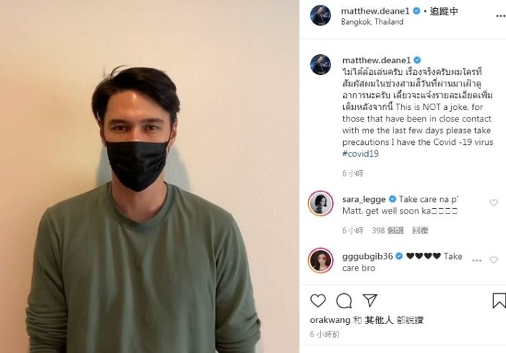

2月27日：全国新冠累计确诊78824例 湖北省外新增再次降至个位数
原文链接 备份链接 【财新网】（记者 耿铭钟）自2019年12月31日湖北省武汉市卫健委首次通报当地新型冠状病毒肺炎病例以来，新冠病患一度遍布中国各个省份。2月27日0时至24时，湖北省新增确诊病例318例，为疫情肆虐以来连续九日降至千例 …
 泰国曼谷 图片来源：视觉中国
泰国曼谷 图片来源：视觉中国
“
新增32人中，有5人为输入性病例，3人是在曼谷国际机场与游客密切接触过的出入境官员，2人是在泰国的游客。此外多为集群感染。
”
1月13日，泰国公共卫生部向世界卫生组织（WHO）通报了一例新冠肺炎确诊病例，那是中国之外第一例确诊病例。
在那之后的两个月，泰国疫情一直趋于平稳。然而最近三天，泰国确诊病例从59例翻番，激增至114例，新增者大都为输入性病例和集群感染。
泰国卫生部3月15日（周日）通报新增32例新冠病毒感染者，是泰国病例单日增幅最大的一次，累计确诊114人，其中37人出院，1人死亡。
当日新增患者中，9人于3月6日在曼谷Lumpinee拳击馆感染，当晚拳击比赛的主持人，41岁的泰国演员马修·迪安（Matthew Deane）3月13日已在社交媒体宣布自己确诊。

马修·迪安
另有8人在酒吧等其他娱乐场所感染。《海峡时报》称，这其中有3人曾在夜店与出现症状的中国香港游客开派对，这名香港人已经于3月初离开泰国。
此外还有5人为输入性病例，3人为在曼谷国际机场与游客密切接触过的出入境官员；2人为在泰国的游客；2人是曼谷一餐厅员工，该餐厅老板是冠状病毒检测呈阳性的新加坡人。
泰国卫生部常务秘书Sukhum Kanchanapimai表示，周日新增患者中还有3人的感染源正在调查中，另有51例等待确认检测结果。
周日当天上午，83名泰国人从欧洲疫情最严重的意大利返回祖国，其中6人出现新冠相关症状，被送到医院继续检查。其余77人将在海军基地接受14天隔离。
3月13日，泰国通报的7名新增病例中包括主持人马修、从日本返回的20岁学生、另一名从日本返回的50多岁女性以及她的3名家人、还有一名63岁女性，为此前确诊患者亲属。
值得一提的是，上述63岁女性是近日一场集体感染中确诊患者的母亲。泰国于3月12日通报称，15名曾“一起喝酒抽烟”的人士中发现11人确诊感染新冠病毒，其余4人病毒检测阴性。
泰国内政部长阿努蓬此前表示取消中国在内的18个国家和地区落地签政策，并在3月13日开始实施，实施期限为3月13日至9月30日。
泰国卫生部将于周一（3月16日）向泰国总理巴育主持的病毒中心继续建议减少进入泰国的人数，关闭高风险的娱乐场所，并取消人群聚集活动。

长按识别二维码
获取更多文章

原文链接 备份链接 【财新网】（记者 耿铭钟）自2019年12月31日湖北省武汉市卫健委首次通报当地新型冠状病毒肺炎病例以来，新冠病患一度遍布中国各个省份。2月27日0时至24时，湖北省新增确诊病例318例，为疫情肆虐以来连续九日降至千例 …
原文链接 备份链接 图片来源：图虫 来源:人民日报客户端 “ 今天下午，在北京市新型冠状病毒肺炎疫情防控工作新闻发布会上，北京市人民政府副秘书长陈蓓表示，境外输入已成为本市疫情防控重点。 ” 今天下午，在北京市新型冠状病毒肺炎疫情防控工作 …
原文链接 备份链接 【财新网】（记者 卿滢）3月9日，意大利宣布全国各地进入“封城”，欧洲全境内的新冠肺炎疫情也进一步加剧；西班牙一夜之间确诊人数翻倍，法国文化部长和瑞典央行副行长感染。随着塞浦路斯确诊首例患者，疫情已经扩散至欧盟全境27 …
原文链接 备份链接 【财新网】（记者 丁捷 综合）国内疫情得以控制，全球疫情持续蔓延。截至目前，全国已有22省份先后调降省级应急响应级别，新增确诊病例进一步减少，但国际形势依旧严峻。国家卫健委高级别专家组组长钟南山表示，全球疫情的发展估计 …
原文链接 备份链接 图片来源：Kyoto News “ 全球新冠肺炎疫情播报，持续更新。 ” 全球 0800【全球疫情汇总】 据新浪实时统计，截至3月9日8点，除中国（包括港澳台地区）以外，海外新冠肺炎累计确诊28854例，死亡702例， …